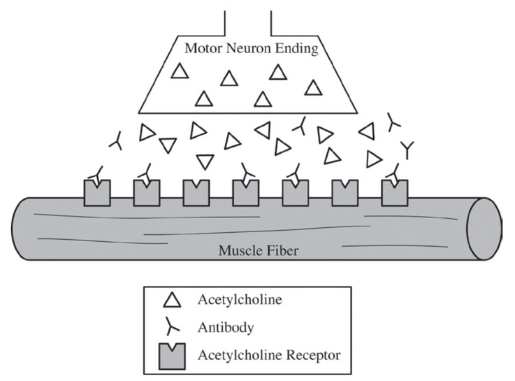

The illustration above depicts a neuromuscular junction of a patient with an autoimmune disorder. Acetylcholine is a stimulatory neurotransmitter. Which of the following would be the most likely result of the continued presence of the antibody?